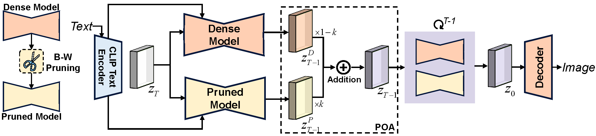
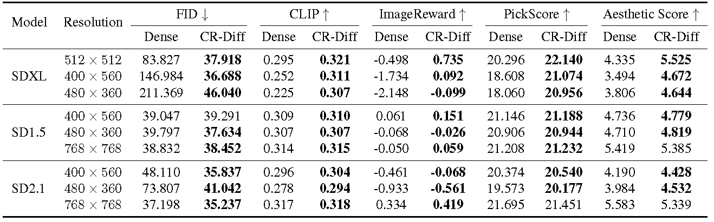
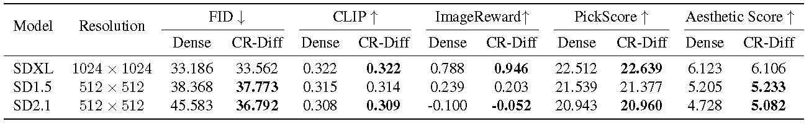
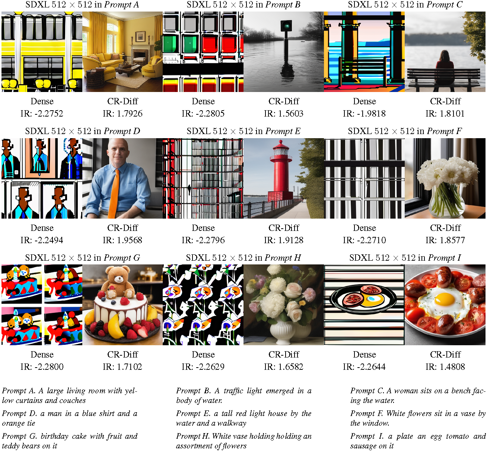
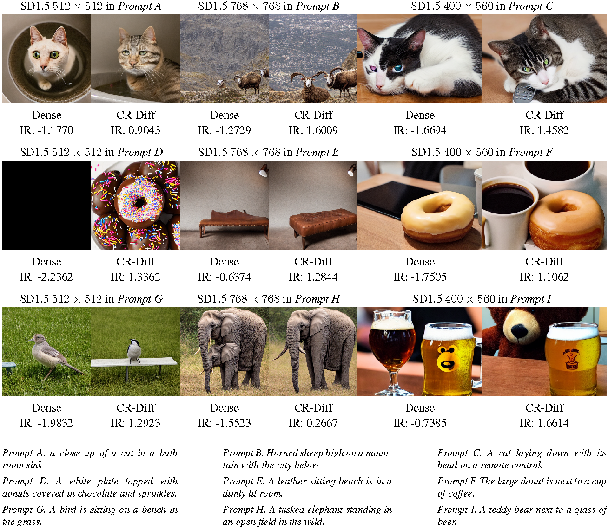
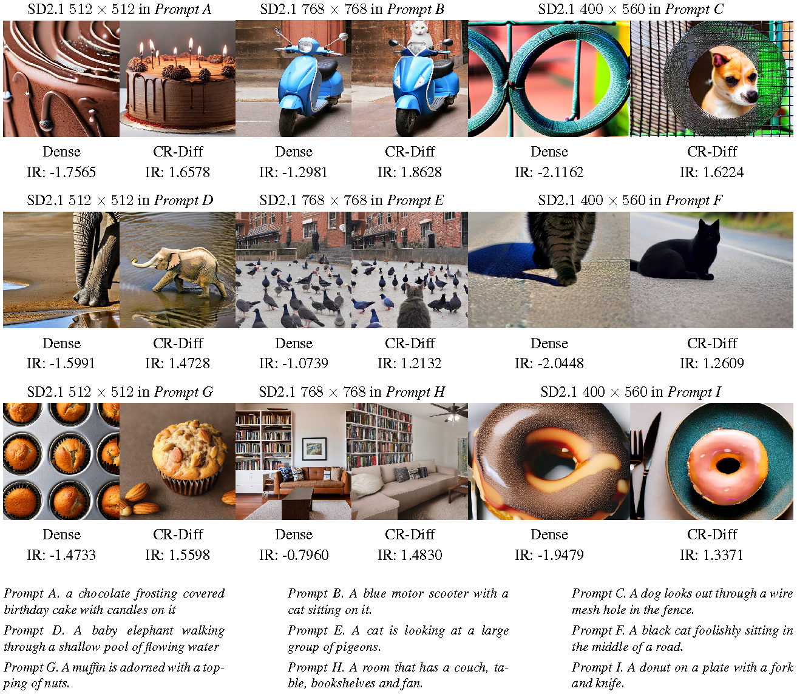

@misc{ren2026crdiff,
title={Cross-Resolution Diffusion Models via Network Pruning},
author={Jiaxuan Ren and Junhan Zhu and Huan Wang},
year={2026},
eprint={2604.05524},
archivePrefix={arXiv},
primaryClass={cs.CV},
url={https://arxiv.org/abs/2604.05524},
}